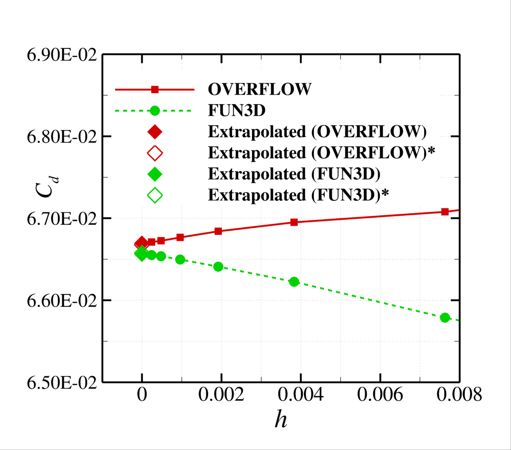
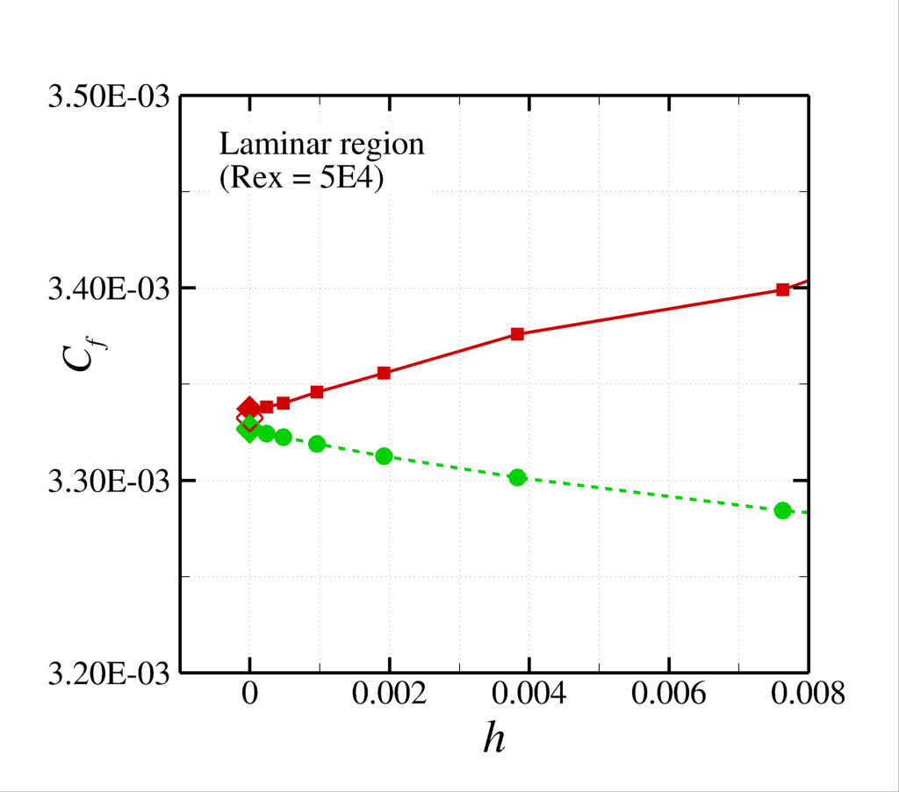
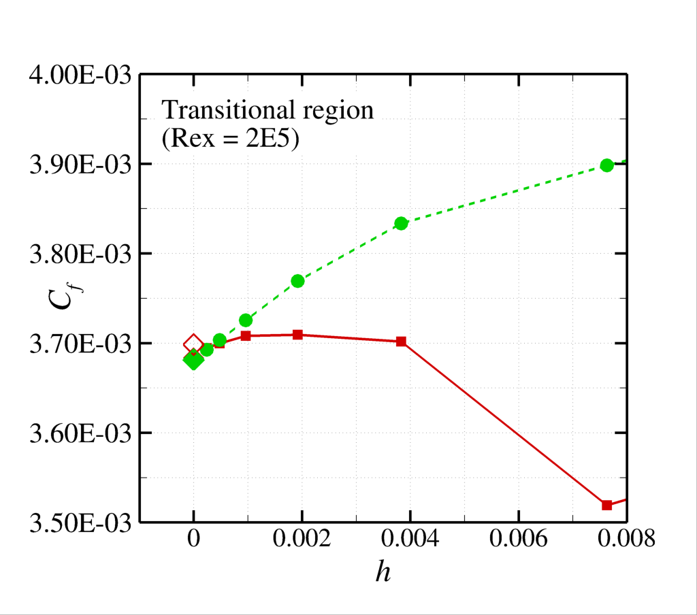
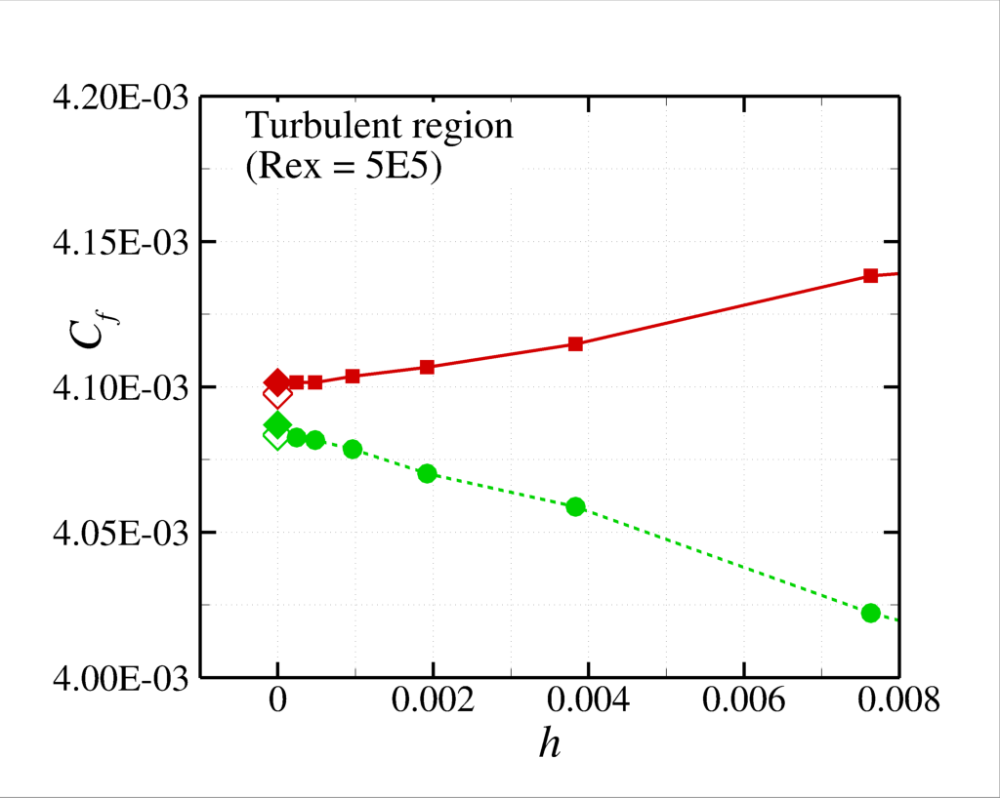
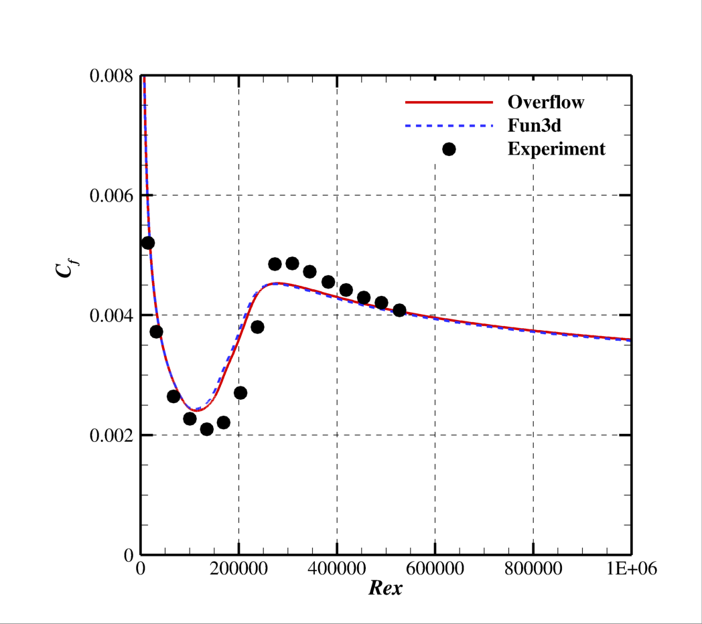
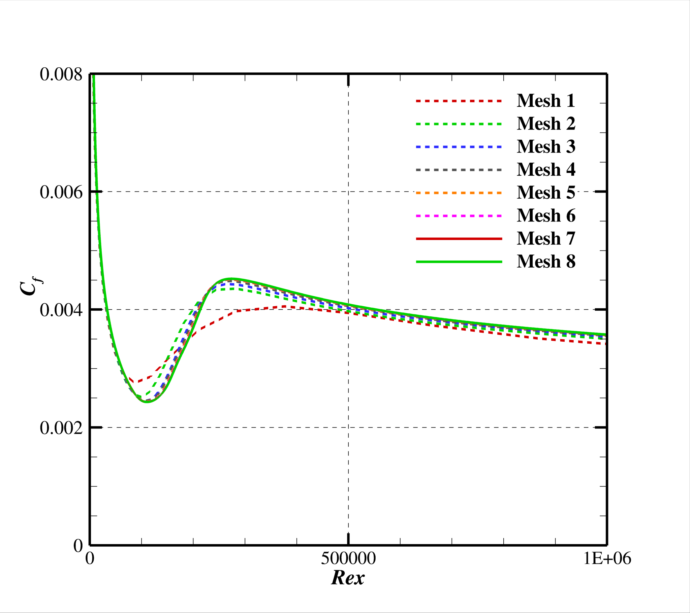
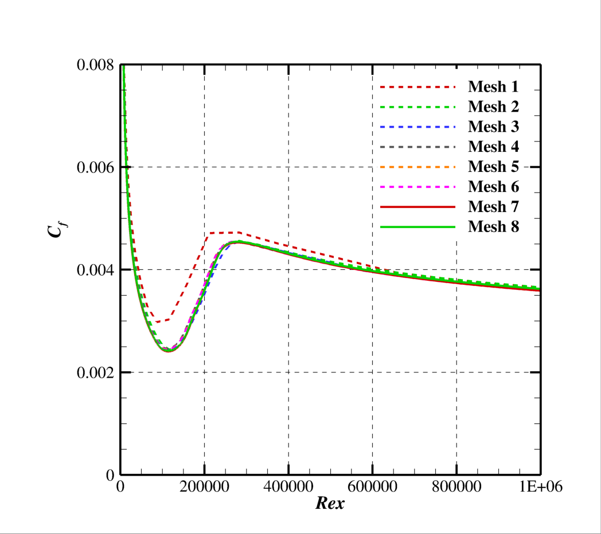

Public Access (formerly Langley Research Center)Turbulence Modeling Resource |
 This page under construction. Some links and files may not be here yet!
This page under construction. Some links and files may not be here yet!
Return to: Turbulence Modeling Resource Home Page Return to: T3A Transition Verification Main Page VERIF/2DTFP: 2D T3A SST-2003-LM2009 Results
Results are shown here
from 2 compressible codes so that the user may compare their own compressible
code results. Multiple grids were used so the user can see trends with grid
refinement. Different codes will behave differently with grid refinement depending
on many factors (including code order of accuracy and other numerics), but it
would be expected that as the grid is refined the results will tend toward an
infinite grid solution that is the same. Be careful when comparing
details: any differences in boundary conditions or flow conditions may affect
results. Two independent
compressible RANS codes, OVERFLOW and FUN3D, were used to compute this 2-D flat
plate case with the Menter SST-2003 turbulence model and the Langtry and Menter
2009 transition model (see full descriptions on the SST-2003 and SST-2003-LM2009
pages). The full series of 8 grids were used. OVERFLOW is a finite volume,
structured overset code and FUN3D is a node-centered, unstructured, finite
volume code (FUN3D can solve on mixed element grids, so this case was computed on the same hexahedral grid
used by OVERFLOW). Both codes used Roe flux splitting scheme. OVERFLOW utilized
an SSOR implicit solution algorithm and FUN3D utilized a point-implicit
procedure with implicit line relaxation. Both codes were run with the full
Navier Stokes (as opposed to thin-layer), and both codes used first-order
upwinding for the advective terms of the turbulence model. Details of each code
can be found using the links below. Additional OVERFLOW Information The following plots show
the drag coefficient based on the integrated drag over the entire plate, as
well as the local skin friction coefficient at three points, one within the
laminar region, one within the transition region, and one within the fully
turbulent region. In the plot the x-axis is plotting 1/N1/2, which is proportional to grid spacing (h). At
the left of the plot, h=0 represents an infinitely fine grid. Both codes go
toward approximately the same integrated result on an infinitely refined grid.
Note that the legend entries with hollow symbols (marked with an asterisk in the first figure) denote extrapoled (h=0) solutions based on the finest
three mesh levels except for mesh level 8, i.e. meshes 5, 6, and 7. The filled diamond symbols represent extrapolated, (h=0) values based on
mesh levels 6, 7, and 8..  Using the uncertainty estimation procedure from the Fluids
Engineering Division of the ASME (Celik, I. B., Ghia, U., Roache, P. J., Freitas, C. J., Coleman, H.,
Raad, P. E., "Procedure for Estimation and Reporting of Uncertainty Due to
Discretization in CFD Applications"; Journal of Fluids Engineering, Vol.
130, July 2008, 078001, https://doi.org/10.1115/1.2960953), described in Summary of Uncertainty Procedure, the finest 3 grids yield the following: CODE Computed apparent order, p Approx
rel fine-grid error, ea21 Extrap
rel fine-grid error, eext21 Fine-grid
convergence index, GCIfine21 CD OVERFLOW 1.25 0.025% 0.018% 0.023% FUN3D 1.41 0.023% 0.013% 0.016% Cf,transitional OVERFLOW 0.61 0.148% 0.284% 0.468% FUN3D 1.01 0.295% 0.293% 0.366% The data files and meshes
used to generate this data will be made available in the near future. Profiles of the skin
friction coefficient distribution obtained with OVERFLOW and FUN3D are also
included in the figure below.  NOTE: The predictions of
the SST-2003-LM2009 model (like all turbulence and transition model pairs) is
sensitive both to the implementation of the transition model and the underlying
turbulence model. The results included on this page utilize codes for which the
implementation SST-2003 model has already been verified. It is highly
recommended that coders ensure that the turbulence model is verified against
the turbulent verification data (link to turbulence verification cases) before attempting to verify transition model
implementations. The results included on
this page are provided in this reference: Venkatachari, B. S., Mysore, P., V.,
Hildebrand, N., Choudhari, M., M., and Denison, M., F., "Verification of the
γ-Reθt Transition Model in OVERFLOW and FUN3D,", Journal of Aircraft
2024 Vo. 61 No. 2, pp. 345-364, https://doi.org/10.2514/1.C037445, which also includes a description of several
other verification cases.
Jump to: SST-2003-LM2009 Equations Return to: T3A Transition Verification Main Page Return to: Turbulence Modeling Resource Home Page
Recent significant updates:
04/02/2024 - Page created
Page Curators: Christopher Rumsey,
Ethan Vogel,
Clark Pederson
Last Updated: 4/7/2025